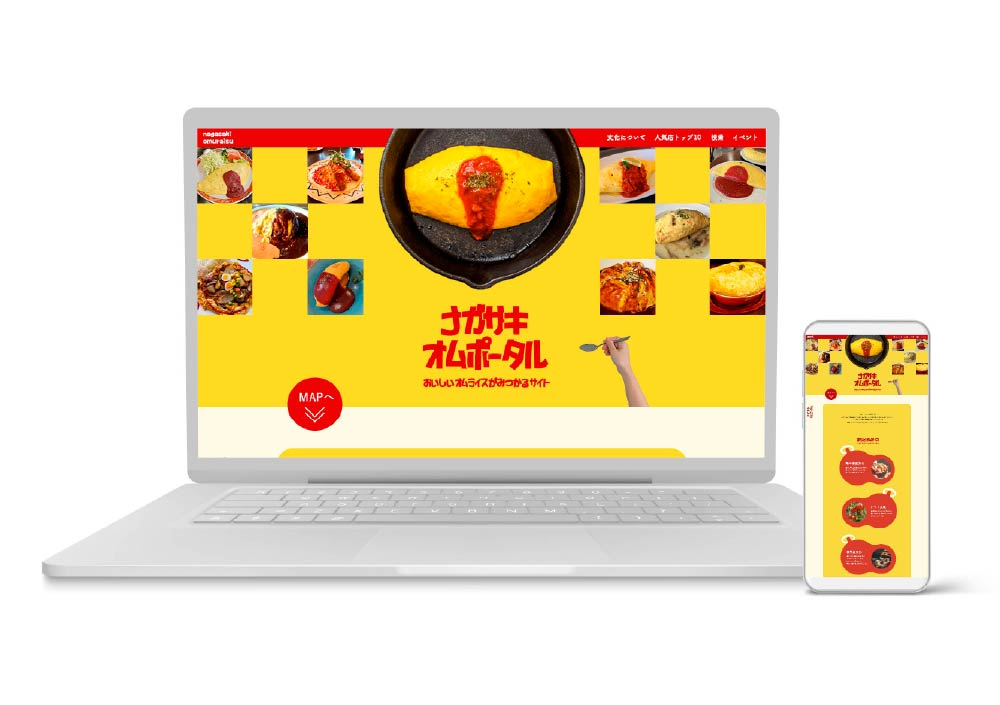
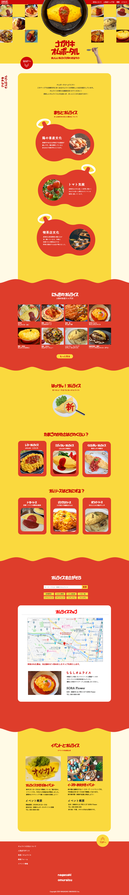

内容：自主制作
制作期間：1週間
使用ツール：Illustrator/Photoshop
内容説明
長崎市内のオムライス店の情報をまとめたのポータルサイト
ターゲット
10代～30代の女性で、長崎に旅行に来てご飯を探している方や、オムライスが好きな方を想定しています。
サイトの目的
長崎の名物である洋食、特にオムライスを広くアピールし、観光客向けの情報発信を通じて地域経済の活性化につなげることを目的としています。
デザインについて
「あなたのお気に入りのオムライス店を見つけよう」というコンセプトをもとに、目的である来客促進を意識してサイトを設計しました。トップ画面にはさまざまなオムライスの写真を配置し、市内に多数の店舗があることを直感的に伝えるレイアウトにしています。 メインターゲットである女性向けに、オムライスの造形をモチーフにした装飾や柔らかい配色を用い、遊び心と楽しい雰囲気を演出しました。また、オムライス選びに新しい視点を提供するコラムを設置することで、ユーザーが楽しみながらお店を選べる工夫も加えています。
